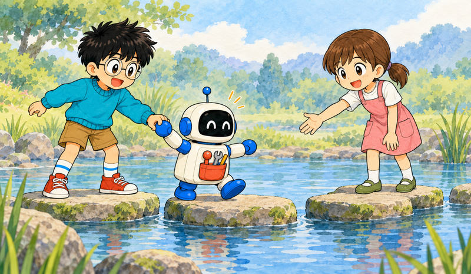

Feature 08 · VERBATIM
Get started with Claude Managed Agents
Create your first autonomous agent.

This guide walks you through creating an agent, setting up an environment, starting a session, and streaming agent responses.
Core concepts
| Concept | Description |
|---|---|
| Agent | The model, system prompt, tools, MCP servers, and skills |
| Environment | Configuration for where sessions run: an Anthropic-managed cloud sandbox, or a self-hosted sandbox on your own infrastructure |
| Session | A running agent instance within an environment, performing a specific task and generating outputs |
| Events | Messages exchanged between your application and the agent (user turns, tool results, status updates) |
Prerequisites
An API key from the Console
Install the CLI
Homebrew (macOS)
brew install anthropics/tap/ant
curl (Linux/WSL)
For Linux environments, download the release binary directly.
VERSION=2.4.0
OS=$(uname -s | tr '[:upper:]' '[:lower:]')
case $(uname -m) in
x86_64) ARCH=amd64 ;;
aarch64) ARCH=arm64 ;;
esac
curl -fsSL "https://github.com/anthropics/anthropic-cli/releases/download/v${VERSION}/ant_${VERSION}_${OS}_${ARCH}.tar.gz" \
| sudo tar -xz -C /usr/local/bin ant
You can find all releases on the GitHub releases page.
Go
You can also install the CLI from source using go install. Requires Go 1.25 or later.
go install github.com/anthropics/anthropic-cli/v2/cmd/ant@latest
The binary is placed in $(go env GOPATH)/bin. Add it to your PATH if it isn’t already:
export PATH="$PATH:$(go env GOPATH)/bin"
Check the installation:
ant --version
Install the SDK
Python
pip install anthropic
Set your API key as an environment variable:
export ANTHROPIC_API_KEY="your-api-key-here"
Create your first session
1. Create an agent
Create an agent that defines the model, system prompt, and available tools.
CLI
ant apply coding-assistant.md
coding-assistant.md
---
name: Coding Assistant
model: claude-opus-5-5
tools:
- type: agent_toolset_20260401
---
You are a helpful coding assistant. Write clean, well-documented code.
ant apply prints the agent’s ID and records it in claude-lock.json. You’ll reference it in every session you create.
The agent_toolset_20260401 tool type enables the full set of pre-built agent tools (bash, file operations, web search, and more). See Tools for the complete list and per-tool configuration options.
2. Create an environment
An environment defines the sandbox where your agent runs. This one uses limited networking with package managers allowed, so code running in the sandbox can reach public package registries and code hosts. Web search and web fetch run outside the sandbox, and this quickstart does not need them. With limited networking, the allowed_hosts list applies to them too. They return no pages or search results in this environment, because it lists no hosts. For your own agent, list the hosts it needs in allowed_hosts.
CLI
ant apply environment.yaml
environment.yaml
# yaml-language-server: $schema=https://platform.claude.com/schemas/ant/beta/environment.json
name: quickstart-env
config:
type: cloud
networking:
type: limited
allow_package_managers: true
ant apply records the environment’s ID in claude-lock.json too. To create the agent and the environment with one command, pass both files: ant apply coding-assistant.md environment.yaml.
This quickstart uses a cloud environment. To decide whether to run tools on your own infrastructure with a self-hosted sandbox instead, see Choosing an agent environment.
3. Start a session
Create a session that references your agent and environment.
Python
session = client.beta.sessions.create(
agent=agent.id,
environment_id=environment.id,
title="Quickstart session",
)
print(f"Session ID: {session.id}")
4. Send a message and stream the response
Open a stream, send a user event, then process events as they arrive:
Python
with client.beta.sessions.events.stream(session.id) as stream:
# Send the user message after the stream opens
client.beta.sessions.events.send(
session.id,
events=[
{
"type": "user.message",
"content": [
{
"type": "text",
"text": "Create a Python script that generates the first 20 Fibonacci numbers and saves them to fibonacci.txt",
},
],
},
],
)
# Process streaming events
for event in stream:
match event.type:
case "agent.message":
for block in event.content:
if block.type == "text":
print(block.text, end="")
case "agent.tool_use":
print(f"\n[Using tool: {event.name}]")
case "session.status_idle":
print("\n\nAgent finished.")
break
The agent writes a Python script, runs it in the sandbox, and verifies the output file was created. Your output looks similar to this:
I'll create a Python script that generates the first 20 Fibonacci numbers and saves them to a file.
[Using tool: write]
[Using tool: bash]
The script ran successfully. Let me verify the output file.
[Using tool: bash]
fibonacci.txt contains the first 20 Fibonacci numbers (0 through 4181).
Agent finished.
What’s happening
When you send a user event, Claude Managed Agents:
Provisions a sandbox: Your environment configuration determines how it’s built.
Runs the agent loop: Claude determines which tools to use based on your message.
Runs tools: File writes, bash commands, and other tool calls run inside the sandbox.
Streams events: You receive real-time updates as the agent works.
Goes idle: The agent emits a
session.status_idleevent when it has nothing more to do.
Build a complete app
Each of these quickstarts pairs Claude Managed Agents with a popular chat framework to make a complete, runnable application. In each one, the framework renders the chat surface while a managed session runs the agent loop server-side: the session holds the transcript, runs tools in a sandbox, and streams events that the front end renders.
A research analyst in a browser chat built with Vercel’s Chat SDK. Each conversation is one persistent session that streams its reply while a live feed shows the tool calls. Swapping the Chat SDK adapter moves the same handler to Slack, Teams, Discord, or WhatsApp.
A spreadsheet analyst in a chat built from assistant-ui primitives. Sessions are the thread list, one reducer turns the session event log into messages and tool cards, and each bash command renders an inline Allow/Deny gate before it runs.
A personal finance assistant in a CopilotKit chat. The AG-UI adapter for Claude Managed Agents maps each chat thread to a managed session and streams replies token by token, and custom tools render interactive charts inline in the conversation.
Next steps
Create reusable, versioned agent configurations
Customize networking and sandbox settings
Enable specific tools for your agent
Handle events and steer the agent while it runs
Run your agent on a recurring cron schedule
Distill a document corpus once into a knowledge wiki, then answer repeated questions from it at a fraction of the cost